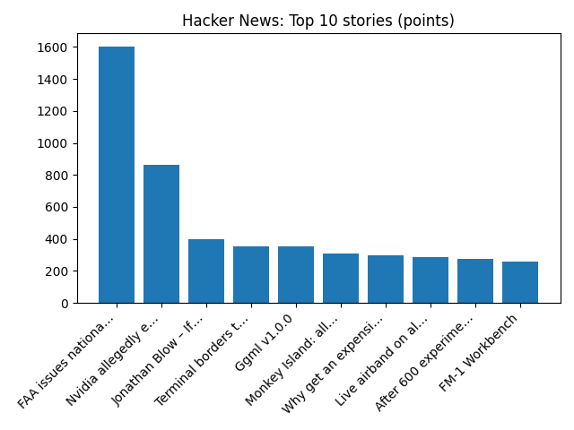

US has floated Ukraine ceding Donbas for Nato membership, Zelensky says
2 related headlinesBBC — WorldReuters — Headlines (Google News)
YOUR DAILY INTELLIGENCE BRIEF · 2026-11-14
Global watch: US has floated Ukraine ceding Donbas for Nato membership, Zelensky says, US floated idea of Ukraine ceding Donbas for NATO membership, Zelenskiy says - Reuters.
Northern Virginia: Bull Run Festival of Lights Opens Tonight for the 2026 Season - Alexandria Living Magazine, Northern Virginia Tables Worth the Drive From DC - DC Life Magazine.

Global coverage includes US has floated Ukraine ceding Donbas for Nato membership, Zelensky says; US floated idea of Ukraine ceding Donbas for NATO membership, Zelenskiy says - Reuters; Ukraine's Zelenskiy escalates criticism of SpaceX over speed caps - Reuters. Local coverage includes Bull Run Festival of Lights Opens Tonight for the 2026 Season - Alexandria Living Magazine; Northern Virginia Tables Worth the Drive From DC - DC Life Magazine.

Skegby railway station
Skegby railway station is a former station on the Leen Valley Extension of the Great Central Main Line. It served the village of Skegby, Nottinghamshire in England.
https://en.wikipedia.org/wiki/Skegby_railway_station
Runs so far today: 2